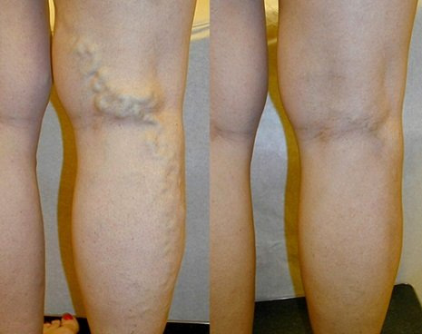

Flebólogo: las varices en mujeres es una patología peligrosa. Sin embargo, hoy en día se puede tratar fácilmente en casa.
Según las estadísticas, las varices y la alteración del flujo sanguíneo se diagnostican en el 72% de las mujeres mayores de 50 años (37% en mujeres mayores de 30). Lo más peligroso de esta patología es que no mejora con el tiempo: la expansión de las venas subcutáneas aumenta, lo que significa que la hinchazón de las extremidades, el dolor y el riesgo de trombosis vascular aumentan también.
Sin embargo, con el uso de productos modernos, esta patología se puede curar fácilmente. El cirujano y flebólogo Independiente, Médico de Honor, Científico de Honor de España, Miembro de la Sociedad Europea de Flebólogos, Miembro de la Junta de la Asociación de Flebólogos, Catedrático y Jefe del Centro Médico de Flebología Moderna el Dr. Daniel Montero Campos nos explica cuáles son los métodos modernos de tratamiento de las varices en mujeres y hombres.
- Dr. Montero, ¿por qué son tan peligrosas las varices para la mitad de la humanidad?
- Bueno, lo cierto es que muchos ni siquiera se dan cuenta de que se trata de una enfermedad en toda regla y subestiman sus consecuencias. Muchos esperan que va a desaparecer por sí sola con el tiempo, pero el caso es que nunca desaparece. Las varices no solo pueden destruir la vida de una persona por la constante hinchazón y el síndrome de dolor, sino también porque desarrollan complejos. Por cierto, todo esto tiene sus causas: en personas que padecen varices en las extremidades inferiores, siempre se observa hiperpigmentación de la piel, prevalece un tinte azulado y en casos más avanzados se producen úlceras tróficas. Las personas que rodean a dichos pacientes, notan todo eso, lo que posteriormente conduce a complejos. Los que sufren varices tienen que ajustar su armario para ocultar el problema: se ponen zapatos holgados, pantalones largos y medias oscuras.
Sin embargo, el principal peligro de esta patología es que, en su contexto, se desarrolla la tromboflefitis. La tromboflebitis (inflamación de la pared interna de la vena) conduce a la formación de coágulos de sangre que pueden bloquear el lumen de la vena con la formación de flebotrombosis, así como ingresar a los pulmones a través del sistema de la vena genital inferior separándose de la pared del vaso sanguíneo. En este caso, puede producirse un tromboembolismo de la arteria pulmonar, una complicación grave y, en ocasiones, mortal.
Si las varices no se tratan, se producirá una hipertensión venosa dinámica: al caminar, la presión en el sistema venoso deja de disminuir hasta los números necesarios para garantizar una perfusión sanguínea normal a través de los tejidos. Se produce una insuficiencia venosa crónica. Al principio, aparece el edema, luego, junto con el líquido, las células sanguíneas (eritrocitos, leucocitos) penetran en el tejido subcutáneo. Se desarrolla la lipodermatoesclerosis y la hiperpigmentación. Con la siguiente conservación y profundización de los trastornos de la microcirculación y la estasis sanguínea, las células de la piel mueren y se produce una úlcera trófica. Y esto ya significa discapacidad.
De hecho, las personas que se automedican en la lucha contra las varices (o que no luchan en absoluto) viven con una bomba de tiempo. Yo, sinceramente, no entiendo por qué lo hacen. Ahora hay formas bastante efectivas de tratar las varices. En 2-3 semanas, es posible olvidarse de este problema para siempre.
- ¿Está hablando de métodos quirúrgicos?
- Por supuesto que no. Es más, quiero disuadir a todos de tales operaciones. Incluido el uso del láser. A pesar de la alta velocidad de las manipulaciones realizadas (con las que las clínicas y los médicos que solo quieren dinero atraen a sus pacientes), estas operaciones tienen muchas consecuencias negativas para la salud de la mujer, ya que pueden llevar al desprendimiento de un coágulo de sangre. Pero la principal desventaja de la intervención quirúrgica es que es simplemente una eliminación estética del problema, es decir, las consecuencias de la enfermedad y no su causa.
Dado que la causa permanece, el problema reaparecerá en el futuro. Y muy rápidamente, en 1-2 años.
Si queréis deshaceros de las varices de una vez por todas, debéis eliminar la causa. El mecanismo desencadenante en el desarrollo de las varices se considera una interrupción del funcionamiento normal de las válvulas venosas con la aparición de un flujo inverso (reflujo) de sangre.

Durante las operaciones, se limpian los vasos venosos o se limpia por completo una parte de la vena, sin embargo, el funcionamiento normal de las válvulas no se restablece con dicha manipulación. Esto conduce a la reaparición del problema. Por ello, en nuestra clínica hemos dejado de recomendar el tratamiento quirúrgico de las varices.
- ¿Qué aconsejaría ahora para tratar las varices?
- Por ejemplo, un producto muy bueno que permite curar incluso las varices más avanzadas es Varikosette, desarrollado en 2019 por el Instituto de Venas de Madrid. Dado que este producto es para uso doméstico, y el Instituto en sí no se dedica a actividades comerciales, cuesta muy poco en comparación con los productos que se presentan en las farmacias, ¡y realmente ayuda!
- ¿Puede dar algunos ejemplos concretos del tratamiento de las varices con este producto?
- Sí, por supuesto. Puedo contaros de cientos de casos, pero me voy a centrar en los que más demuestran todos los beneficios del tratamiento con este producto:

Las venas se han recuperado por completo. Período de tratamiento: 2 semanas.

El insoportable dolor que acompañó a la paciente durante 2 años desapareció por completo. Las venas se han recuperado.

El período de uso de Varikosette fue de 2 meses. Las venas se han recuperado por completo.
Las fotografías muestran claramente que Varikosette no solo alivia los síntomas, sino que también desencadena los procesos de regeneración de las varices. Como resultado, las venas se restauran por completo.
Según los resultados de los estudios clínicos, así como la práctica de uso, Varikosette se considera el producto principal para el tratamiento de las varices. Y lo mejor de todo es que se pueden tratar en casa. Después de todo, muchas personas no quieren ir al médico. Y esto es comprensible, sobre todo en el contexto de los acontecimientos recientes. Varikosette ayuda a deshacerse de las varices de forma individual.
- ¿Varikosette es un gel o unas pastillas?
- Se trata de una crema especial que detiene el desarrollo de las varices y restaura las venas gracias a una fórmula especial. Varikosette es un desarrollo patentado único de nuestros científicos. En ningún otro lugar del mundo existen productos como este.
Además, no es un fármaco, sino un producto completamente natural que excluye una reacción alérgica y otros problemas que pueden surgir durante el tratamiento. Tampoco ejerce una carga sobre el cuerpo, obligándolo a procesar una multitud de compuestos químicos diversos.
- Si Varikosette no se vende en las farmacias, ¿cómo se puede obtener?
- Es muy simple, podéis obtener la crema Varikosette contactando al Instituto de Venas a través de la página web oficial o completando el formulario de abajo. Este producto participa periódicamente en diversos programas de exención, lo que lo hace verdaderamente social.
Por ejemplo, ahora Varikosette participa en el programa especial "España sin varices", según el cual se puede obtener por 39 €. Probablemente os sorprenda lo que os voy a decir, ¡pero realmente es posible llevarse un envase de este producto por 39 €! Ahora comparad este precio con los precios de los fármacos que venden las farmacias.
Varikosette ayuda incluso en los casos más avanzados de varices, por lo que se recomienda incluso para las personas con una forma grave de la enfermedad. También se puede utilizar como método preventivo.
Me gustaría compartir los resultados de los estudios clínicos después de completar un ciclo de tratamiento con Varikosette que sorprendieron gratamente a muchos médicos. Será una verdadera salvación para aquellos pacientes que tengan varices avanzadas.
1. La eficacia de la crema Varikosette, calculada según el método estándar (el número de recuperados sobre el número total de pacientes en un grupo de 570 personas en tratamiento) fue:
- Alivio del dolor - 99%.
- Reducción de la hinchazón de piernas - 98%.
- Reducción de la pesadez y las molestias en las piernas - 99%.
- Ausencia de la telangiectasia - 98%.
- Eliminación de las varices - 93%.
- Eliminación de la hiperpigmentación - 96%.
2. No se identificaron efectos secundarios indeseables, incluidas las reacciones alérgicas.
3. Varikosette es reconocido como el producto líder en la lucha contra las varices.
Además de España, este producto fue certificado en América en la Universidad de Flebología y Hematología de Nueva York. Los ensayos clínicos han confirmado completamente estos datos. Los americanos incluso consiguieron una mayor tasa de recuperación. Los países americanos están mostrando un gran interés en el producto. Todas las pruebas han demostrado que este producto tiene un nivel de eficacia extremadamente alto.

- Creo que a nuestros lectores les interesará saber cómo comprar Varikosette con el programa especial.
- Actualmente, el programa está en marcha en algunas regiones españolas. Hay una falta crítica de volúmenes de producción para cubrir todo el país en su conjunto. Cuando el lote de un producto preparado para una región en particular llega a su fin, se "apaga" y espera su siguiente turno.
La crema Varikosette se puede comprar por 39 €. Lo único que hay que hacer para recibir este producto es dejar una solicitud en esta página web en el formulario de pedido más abajo, indicando vuestro nombre y número de teléfono para que el personal del centro de consulta pueda ponerse en contacto con vosotros. Cada ciudad desaparece automáticamente. Por lo tanto, si veis que podéis hacer vuestro pedido, entonces eso significa que el producto aún no se ha agotado por completo. Yo, personalmente, garantizo la recepción del producto a todos los que hayan dejado sus solicitudes.
- ¿Quizás quiera decirles algo a nuestros lectores antes de que terminemos la entrevista?
- Lo único que quiero decir es que no tengáis prisa por morir temprano, cuidad vuestra salud. Es posible que ni siquiera sospechéis que tenéis varices. Esta enfermedad comienza de manera completamente imperceptible: aparece pesadez y fatiga en las piernas, surge hinchazón después de un gran esfuerzo, se desarrollan redes vasculares, y esta lista puede continuar. Como resultado, ni siquiera notaréis cómo tenéis numerosos problemas de salud. Y todo eso sin hablar de una gran cantidad de muertes súbitas que suelen estar asociadas con el desarrollo de la trombosis. ¡No esperéis hasta que sea demasiado tarde! Comenzad la prevención o el tratamiento ahora. Por nuestra parte, hemos hecho absolutamente todo para que cualquiera pueda hacerlo.
¡OFERTA!
SOLO
2
DÍAS
23 и 24 noviembre
¡Pide Varikosette
por 39 €
en lugar de
78 €!
Quiero pedir Varikosette

 Marina
Marina
Tenía unas venas repugnantes antes de probar esta crema. Ya estaba pensando en eliminarlas, pero cuando probé Varikosette, decidí dejar esa idea. Después de un mes de uso, las venas estaban como nuevas. ¡Mi felicidad no tenía límites! Me sorprende que ahora tengáis esa oferta.
Sol Domínguez
Yo no tengo problemas con las venas, pero mi madre no sabe qué hacer, piensa en sacarse la vena por completo. Le pediré este producto, espero que ayude, especialmente ahora que un envase solo cuesta 39 €.
 Julia
Julia
¡Me llevé esta crema por 39 € tal como prometían! Así que no dudéis en participar, este programa ya se ha lanzado en diferentes ciudades. Oí hablar de Varikosette por primera vez hace tres meses e inmediatamente lo pedí. ¡Tenía unos problemas terribles con las varices, pero esta vez logré resultados en siete días! ¡¡¡Disfruto de la vida!!!

Elena
Recientemente vi un programa sobre varices en el que hablaban de este producto, presumían de que habían creado el mejor producto del mundo para las varices.
 Lucía
Lucía
Yo también me la pedí, dijeron que había llegado a tiempo. Prometieron entregar la crema en 2 días, así ahora a esperar
 Carlota Gómez
Carlota Gómez
No esperaba que iba a tener tan buenos resultados después de comenzar a usar la crema. En primer lugar, desaparecieron las sensaciones desagradables y luego todo comenzó a verse mejor visualmente. ¡Ahora mis piernas están completamente sanas! ¡¡Además es superbarata!!:).
 María
María
Esta entrevista es muy interesante, ¡gracias! ¡Abrís los ojos a la gente!
Paula
¿Seguro que esto no es una estafa? ¿Por qué la venden en Internet?
 Teresa
Teresa
Me uno a las recomendaciones. Comencé a tener problemas con las venas. Fui a un flebólogo, me examinó y dijo que necesitaba un tratamiento urgente. Me recetó medicamentos por 100 euros que ni siquiera ayudaron. En el trabajo me recomendaron Varikosette. En una semana esas terribles venas se hicieron mucho más pequeñas :)
Manuela Alcalde
Paula, ¿has leído el artículo? ¡La venden en Internet porque quieren ayudar! ¿Y qué tipo de estafa puede haber si el precio es de 39 € por un envase? Yo la pedí hace tiempo, me la trajo un mensajero, lo revisé todo, lo miré y solo entonces pagué. ¡Pídela, no tengas miedo!
 Natalia
Natalia
Sol, te hablo de mi propia experiencia: ¡el resultado del tratamiento es incomparable! La usé yo misma y se la pedí a mi madre. Las venas de ambas volvieron a su estado normal. La verdad es que estamos muy satisfechas. Pídesela a tu mamá, ¡no lo dudes!
 Ana Ramírez
Ana Ramírez
Acaban de salirme varices, pero una vez vi cómo podía terminar todo eso en casa de una amiga. Ella también me aconsejó Varikosette. Acabo de buscarla en Google y encontré este artículo :))
 Pepa
Pepa
Leí las reseñas y me di cuenta de que tenía que comprarla :)
 Verónica
Verónica
Lo creáis o no, pero yo tenía el mismo problema, mis piernas estaban constantemente hinchadas, aparecieron esas "estrellas", ya estaba desesperada, pero menos mal que descubrí Varikosette, es un producto milagroso, se lo recomiendo a todos
 Lorena
Lorena
Yo también me pedí la crema hace unos días, nada complicado en absoluto. Me llegó por correo un día después. Acabo de comenzar a usarla, escribiré sobre los resultados más tarde. ¡Gracias!
 Carolina
Carolina
Si no fuera por vosotros, nunca habría encontrado este producto. Y probablemente habría muerto un par de años después. Deberíais haber visto las venas que tenía antes de usar esta crema.
 Fabiola
Fabiola
El resultado ha superado mis expectativas. Todo el ciclo de tratamiento me llevó 1 mes, ¡ahora todo es genial! Mis piernas han comenzado a verse como antes.
 Olivia
Olivia
Acabo de pedir la crema con el programa especial.
Realmente la venden por 39 €, ¡daos prisa!
Me llamaron muy rápidamente y confirmaron el pedido. Ya no tengo que avergonzarme de mis piernas.
 Sara
Sara
Llevo 2 semanas usando Varikosette. Siento ligereza en mis piernas. Antes de eso caminaba como una anciana mediomuerta. Mis piernas estaban constantemente hinchadas y me dolían. Además, no se veían muy bien por las varices. ¡Este producto es excelente!
 Gloria
Gloria
Leí el artículo y decidí pedirlo de inmediato. No sabéis cuántas cosas he probado, y las varices siguen igual.
 Isabel
Isabel
Gente, ¿dónde lo comprasteis? En las farmacias no venden este producto, y a mí me da miedo comprarlo por Internet. No quiero toparme con una falsificación porque supongo que no tendrá efecto.
Comentarios